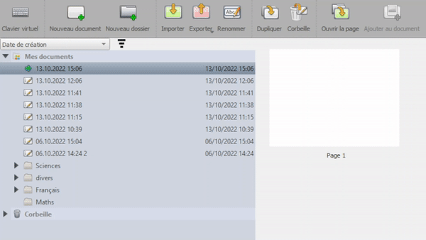
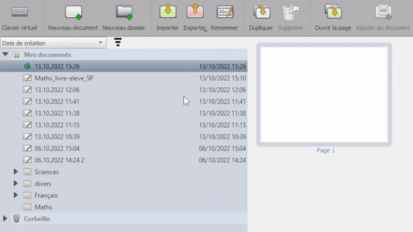

الاستيراد & التصدير
في هذا الوضع، تتوفر ميزتان أساسيتان: الاستيراد وَ التصدير.

استيراد المحتوى
يمكنك استيراد ملفات PDF (.pdf),
وَ الصور (.png, .jpg),
وَ مستندات OpenBoard (ubz.) أو
OpenBoard مجلدات (.ubx) بالنقر على
 .
.

يمكنك أيضاً استيراد مستند OpenBoard (ubz.) من خلال النقر المزدوج على ملفه من نظام التشغيل. سيُشغَّل OpenBoard عند الحاجة وسيقترح استيراده (أو استبداله إذا كان موجوداً مسبقاً).
تصدير مستنداتك
كما يمكنك يمكنك تصدير مستند OpenBoard بصيغة PDF أو UBZ, و مجلد OpenBoard بصيغة UBX. على سبيل المثال:
- حفظ العمل المنجز أثناء الدرس ومشاركته مع طالب غائب.
- مشاركته مع معلمين آخرين أو حفظه على وحدة USB لاستيراده في مكان آخر.
- استيراد عمل طالب بصيغة PDF، وإضافة الملاحظات عليه، ثم تصدير النسخة المشروحة وإرسالها مجدداً.
